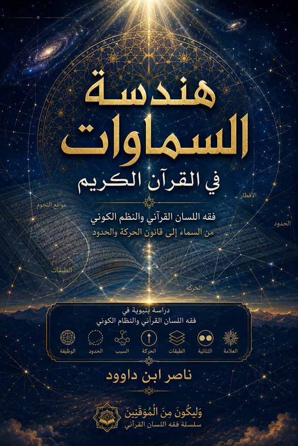

ناصر ابن داوود

نسخة نصية مستخرجة من ملف Word الذي قدمه المؤلف؛ راجع المصدر الأصلي.
جارٍ تجهيز القارئ…
أهلاً بك أستاذنا الفاضل والباحث القدير.
المقدمة العامة
من سؤال شكل الكون إلى سؤال بناء الكون في اللسان القرآني
إشارة منهجية: كتابنا هذا وسلسلة «وَلِيَكُونَ مِنَ الْمُوقِنِينَ»
يجيء هذا الكتاب ليُشَكِّل حلقةً أساسية وقاعدةً استدلالية ضمن مسارٍ معرفيٍّ متكامل افترعناه لإعادة بناء الرؤية القرآنية للكون والإنسان والوجود. وقد توّجنا هذا المسار بأعمالٍ مرجعية سابقة — ومنها كتابنا «فقه اللسان القرآني: منهجٌ جديد لفهم النص والمخطوط»، وكتابنا «نُطق الملكوت: حين تتكلم الموجودات بلسان الله» — ثم صغنا ثمرته الميدانية والمنهجية في مجلدين متكاملين ضمن سلسلة:
«وَلِيَكُونَ مِنَ الْمُوقِنِينَ: رحلة برهانية في ملكوت السماوات والأرض وما بينهما»
حيث تتوزع هذه السلسلة على مستويين رئيسين:
المجلد الأول (المنهج – الرمز – الباطن – بناء اليقين):
وهو المدخل المنهجي للمشروع؛ لا يعالج الكون بوصفه مادةً للجدل العلمي، ولا يتعامل مع الآيات الكونية باعتبارها معادلات فيزيائية أو نماذج فلكية، بل ينطلق من سؤال أعمق: كيف يريد القرآن للإنسان أن يرى الكون؟
يركز المجلد الأول على تأسيس القراءة الرمزية–الباطنية المنضبطة بالنص لا المنفلتة عنه، وتحرير الفرق بين الإيمان واليقين، والرؤية الحسية والرؤية الملكوتية، دون الخوض المبكر في شكل الأرض أو النماذج الفيزيائية، إعداداً للقارئ للانتقال من قراءة الكون كظاهرة إلى رؤية الملكوت كحقيقة دالة.
المجلد الثاني (ملكوت الله المادي في القرآن: السماء – الأرض – الأجرام – نقد النموذج السائد):
وهو الانتقال الحاسـم من الدلالة إلى الشهادة، ومن الرمز إلى التوصيف، ومن المنهج إلى المواجهة المعرفية. يتناول هذا المجلد السماء كسقفٍ مرفوع وبناءٍ محفوظ، والأرض كقرارٍ وثباتٍ ومركز ابتلاء، والأجرام ككيانات وظيفية، مع نقدٍ مباشر وموضوعي للنموذج الكوني المعاصر حين يصطدم بالنص الصريح أو المشاهدة الحسية والاتساق العقلي، بغية كشف الإطار الفلسفي المادي الكامن خلف النظريات، وتحرير الوعي المسلم من التسليم القسري بالنماذج غير المفحوصة.
وإن كتابنا هذا يمثل الركيزة البنيوية والنظامية التي تُمكّن القارئ من استيعاب قوانين هذا الملكوت ومسارات البرهنة فيه، لننتقل سوياً من الإيمان الموروث إلى اليقين المشهود.
إشكالية البحث: لماذا نقرأ الآيات الكونية كما نقرأها؟
لطالما كانت الآيات الكونية في القرآن الكريم ميداناً خصباً للجدل بين المفسرين والعلماء والباحثين. وإذا كان هذا الجدل قديمًا قدم النص نفسه، فإنه قد ازداد حدة في العصر الحديث مع تقدم العلوم الفيزيائية والفلكية، وتصاعد النقاش حول النماذج الكونية التي تقدمها هذه العلوم مقابل ما يراه البعض أنه النموذج القرآني الأصيل.
غير أن المشكلة الأعمق ليست في اختلاف النماذج، بل في الطريقة التي نقرأ بها النص نفسه. فجلّ القراءات التي تناولت الآيات الكونية، سواء كانت قديمة أو حديثة، وقعت في فخ واحد: إسقاط نموذج مسبق على النص.
فالقراءة التراثية أسقطت النموذج الكوني السائد في عصرها (الفلك البطلمي، والفلسفة الأرسطية) على النص، ففسرت الآيات في ضوئه. والقراءة العلمية الحديثة أسقطت النموذج الفيزيائي السائد اليوم (النسبية، الانفجار العظيم، التوسع الكوني) على النص، فبحثت عن تطابقات وإعجازات. والقراءة البديلة أسقطت نموذجاً آخر على النص، وجعلته مادة لإثباته.
وهذه المشكلة — وهي أسبقية النموذج على النص — هي ما يسعى هذا الكتاب إلى معالجتها. فبدلاً من أن نبدأ من نموذج مسبق ونبحث عن آيات تؤيده، أو نبدأ من نصوص منعزلة ونبني عليها تصوراتٍ شاملة، فإننا نقترح قراءةً مختلفة: قراءةً تنطلق من النص نفسه، وتستخرج منه بنيته الداخلية، وتستخلص قوانينه، ثم تختبر النماذج في ضوئها.
لماذا تحتاج مفاهيم السماء والسماوات إلى إعادة بناء؟
من بين المفاهيم الكونية في القرآن، تحتل "السماء" و"السماوات" موقعاً مركزياً. فقد وردت في أكثر من 300 موضع، وتشكل مع "الأرض" ثنائيةً بنيويةً تتكرر في القرآن كله. ومع هذا، فإن مفهوم "السماء" ظل غامضاً ومشوشاً في كثير من القراءات، وذلك لأسباب ثلاثة:
أولاً: الخلط بين الوصف الوظيفي والحكم الهندسي. فالقرآن يصف السماء بأنها "بناء" و"سقف محفوظ" و"طباق" و"شداد"، وهذه أوصاف وظيفية، لكن كثيراً من المفسرين تعاملوا معها كأوصاف هندسية، فحاولوا تحديد شكل السماء وطبيعة مادتها وعدد طبقاتها، وهو ما لا يثبته النص.
ثانياً: الخلط بين المفرد والجمع. فالقرآن يتحدث تارة عن "السماء" مفردة، وتارة عن "السماوات" جمعاً. وهذا الاختلاف ليس مجرد تفصيل لغوي، بل هو دلالة بنيوية: المفرد يشير إلى السماء القريبة وجهة العلو، والجمع يشير إلى البنية الكونية الشاملة. وإغفال هذا الفرق يؤدي إلى قراءة مشوشة.
ثالثاً: الخلط بين النص والنموذج. فكثير من القراءات أسقطت على مفهوم "السماء" ما ليس فيه: جعلته فضاءً كونياً، أو طبقات جوية، أو أبعاداً فيزيائية، بينما النص لا يحدد أيّاً من هذه التفاصيل.
ولذلك، فإن إعادة بناء مفهوم السماء — ومعه بقية المفاهيم الكونية — تتطلب منهجاً جديداً: منهجاً ينطلق من النص، ويستقرئ جميع الموارد، ويبني الشبكة الدلالية، ثم يستخلص القوانين البنيوية، دون إسقاط أي نموذج مسبق.
من القراءة الجزئية إلى القراءة النسقية
أحد أخطر الأخطاء المنهجية في قراءة الآيات الكونية هو القراءة الجزئية: أن نأخذ آية واحدة (أو بضع آيات) ونبني عليها تصوراً كاملاً للكون. فهذه الطريقة، وإن بدت سهلة، تؤدي إلى نتائج مشوشة، لأنها تغفل عن السياق، والعلاقات، والشبكة الكلية التي تنتظم بها الآيات.
فالقرآن ليس مجموعة آيات متفرقة، بل هو نظام دلالي متكامل، حيث يفسر بعضه بعضاً، وتكمل آياته بعضها البعض. ومفهوم "السماء" لا يمكن فهمه من آية واحدة، بل من شبكة استعمالاته في القرآن كله: كيف يرتبط بـ "الأرض"؟ كيف يرتبط بـ "البناء" و"السقف" و"الحفظ"؟ كيف يرتبط بـ "النزول" و"العروج"؟ كيف يرتبط بـ "الأبواب" و"الأقطار"؟
ولهذا، فإن هذا الكتاب يتبنى القراءة النسقية التي:
تستقرئ جميع موارد المفهوم في القرآن.
تبني شبكة العلاقات بينها.
تستخلص القوانين البنيوية التي تنتظم بها.
ثم تختبر النماذج في ضوئها.
وهذا الانتقال من القراءة الجزئية إلى القراءة النسقية هو جوهر المنهج البنيوي الذي يقدمه هذا الكتاب.
القرآن بوصفه نظاماً دلالياً متكاملاً
ينطلق هذا الكتاب من فرضية مركزية: أن القرآن ليس مجموعة نصوص متفرقة، ولا معجماً للكلمات، بل هو نظام دلالي متكامل، له بنيته الداخلية، وقوانينه الخاصة، وشبكة علاقاته المتماسكة.
وهذه الفرضية تستند إلى عدة مقدمات (مفصلة في كتابنا فقه اللسان القرآني):
أولاً: نفي الترادف. ففي القرآن، لا توجد كلمتان تؤديان الوظيفة نفسها. فـ "السماء" ليست "السماوات"، و"النجم" ليس "الكوكب"، و"العروج" ليس "الصعود". وكل كلمة تؤدي وظيفة مختلفة في النظام.